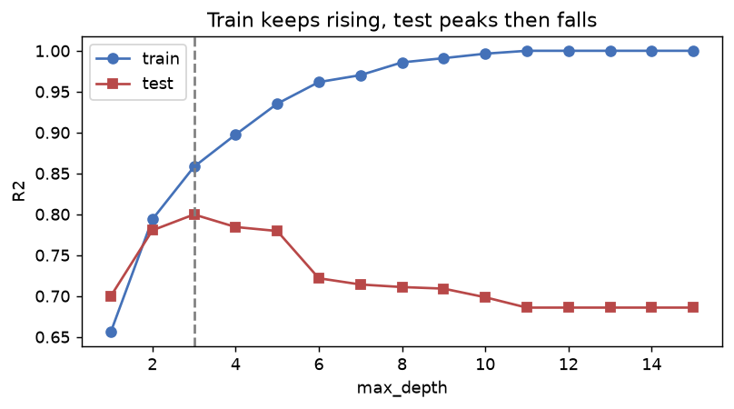

📥 Python 練習ノートブック：ml670_py_practice.ipynb — このページはノートブックの T4の解説です。Jupyter で開いて、同じ名前のセクションを解いてください（自動チェック ✅/❌ 付き）。
①
説明する：何のため？
3文で言えるようにする
複雑なモデルは、訓練データのノイズまで覚えてしまいます。訓練の点数は上がるのに、新しいデータでは当たらない。これが過学習です。
| 状態 | 訓練の点数 | テストの点数 | 対策 |
|---|---|---|---|
| 過学習 | とても高い | 低い | 単純なモデルに／データを増やす／正則化 |
| 学習不足 | 低い | 低い | 複雑なモデルに／特徴量を足す |
交差検証は、データを K 個に分け、1 つずつテストにして K 回評価し、平均する方法です。1 回の分割の「運」に左右されにくくなります。
📝 3文のお手本
過学習は訓練データを暗記して新しいデータで当たらなくなることで、訓練の点数だけ高いのが目印。モデルを複雑にすると訓練の点数は上がり続けるが、テストの点数は途中から下がる。交差検証はデータを K 分割して順番にテストに使い、点数の平均で運に左右されず比べる方法。
②
手で計算する
小さなデータを紙と電卓で
10 件を k = 5 に分けると、1 つのテスト部分は 10 ÷ 5 ＝ 2 件。11 件を 5 分割すると余りが 1 件出るので、先頭の分割に足して [3, 2, 2, 2, 2]（KFold と同じ規則）。
print([len(t) for _, t in KFold(5).split(np.arange(10))]) print([len(t) for _, t in KFold(5).split(np.arange(11))])
[2, 2, 2, 2, 2]
[3, 2, 2, 2, 2]
③
自分で作る
NumPy で書いて、scikit-learn と一致させる
kfold_indices（分け方）・my_cv_score（交差検証）・depth_curve（深さごとの点数）を自作します。
def kfold_indices(n, k): sizes = [n // k + (1 if i < n % k else 0) for i in range(k)] folds, start = [], 0 for s in sizes: te = np.arange(start, start + s) tr = np.concatenate([np.arange(0, start), np.arange(start + s, n)]) folds.append((tr, te)); start += s return folds def my_cv_score(model, X, y, k=5): scores = [] for tr, te in kfold_indices(len(X), k): m = clone(model).fit(X[tr], y[tr]) scores.append(m.score(X[te], y[te])) return float(np.mean(scores)) def depth_curve(X_tr, y_tr, X_te, y_te, depths): train, test = [], [] for d in depths: m = DecisionTreeRegressor(max_depth=d, random_state=0).fit(X_tr, y_tr) train.append(m.score(X_tr, y_tr)); test.append(m.score(X_te, y_te)) return train, test
print([len(t) for _, t in kfold_indices(11, 5)]) m = LinearRegression() print('自作 CV:', round(my_cv_score(m, Xr, yr, 5), 6)) print('sklearn :', round(cross_val_score(m, Xr, yr, cv=KFold(5)).mean(), 6))
[3, 2, 2, 2, 2]
自作 CV: 0.482316
sklearn : 0.482316
決定木の深さで U 字を描く
sin 曲線にノイズを足したデータ（訓練 60 件・テスト 40 件）を、深さ 1〜15 の木で学習します。
train_s, test_s = depth_curve(Xs_tr, ys_tr, Xs_te, ys_te, range(1, 16)) print('深さ15 の訓練 R²:', round(train_s[-1], 3), '/ テスト R²:', round(test_s[-1], 3)) print('テストが最良の深さ:', 1 + int(np.argmax(test_s)), '（R² =', round(max(test_s), 3), '）')
深さ15 の訓練 R²: 1.0 / テスト R²: 0.686
テストが最良の深さ: 3 （R² = 0.8 ）
import matplotlib.pyplot as plt fig, ax = plt.subplots(figsize=(7, 3.4)) d = list(range(1, 16)) ax.plot(d, train_s, 'o-', color='#4471B8', label='train') ax.plot(d, test_s, 's-', color='#B84848', label='test') ax.axvline(1 + int(np.argmax(test_s)), color='gray', ls='--') ax.set_xlabel('max_depth'); ax.set_ylabel('R2'); ax.legend(); ax.set_title('Train keeps rising, test peaks then falls')

訓練（青）は深さとともに 1 に近づくが、テスト（赤）は深さ 3 付近で最良になり、その後下がる。
訓練の R² が ほぼ 1.0（暗記）なのに、テストは 0.69 まで下がりました。深さ 3 前後が「ちょうどよい複雑さ」です。
④
白紙で再現する・よくある間違い
次の日に、見ずにもう一度
④ 次の日にやること：ノートブックの「④ 白紙で再現」で、名前の後ろに
_2 が付いた関数を、③を見ずに書き直します。10分以内に ✅ が揃えば合格です。kfold_indices_2・my_cv_score_2・depth_curve_2⚠️ よくある間違い
- 訓練の点数だけ見て「良いモデル」と判断する
- テストの点数を見ながら深さを選ぶ（テストが訓練の一部になる）。選ぶのは交差検証、テストは最後の 1 回
- 交差検証の各分割ごとに、前処理（標準化など）を全データで fit しておく（漏れ。→ T3）
❓ 確認：5 分割交差検証では、モデルを何回学習する？
5 回（各分割で 1 回ずつ）。点数は 5 個の平均で報告し、バラつき（SD）も一緒に見る。
❓ 確認：訓練 R² = 0.99・テスト R² = 0.60 のとき、何を疑う？
過学習。モデルを単純にする、データを増やす、正則化（Ridge・Lasso）を使う。